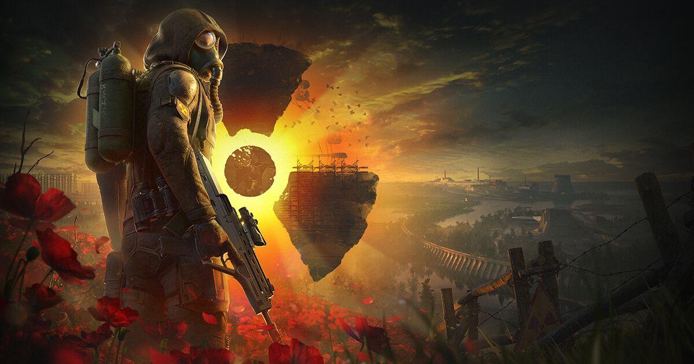
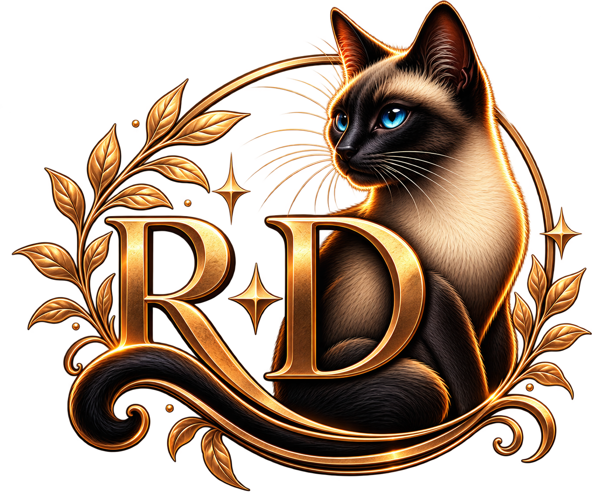
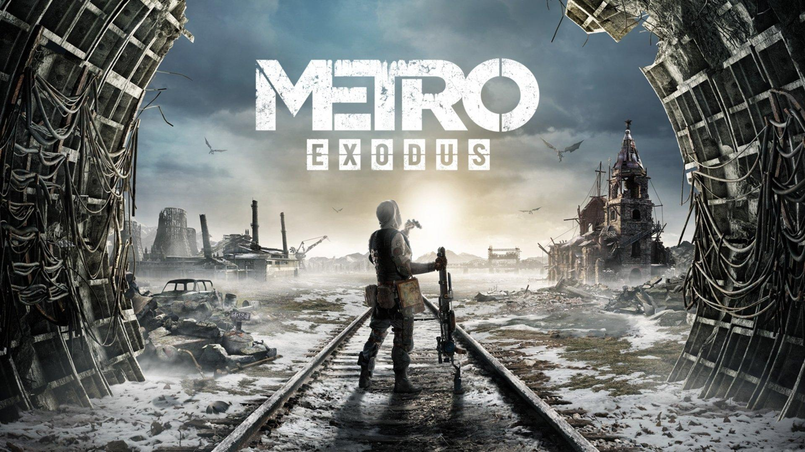
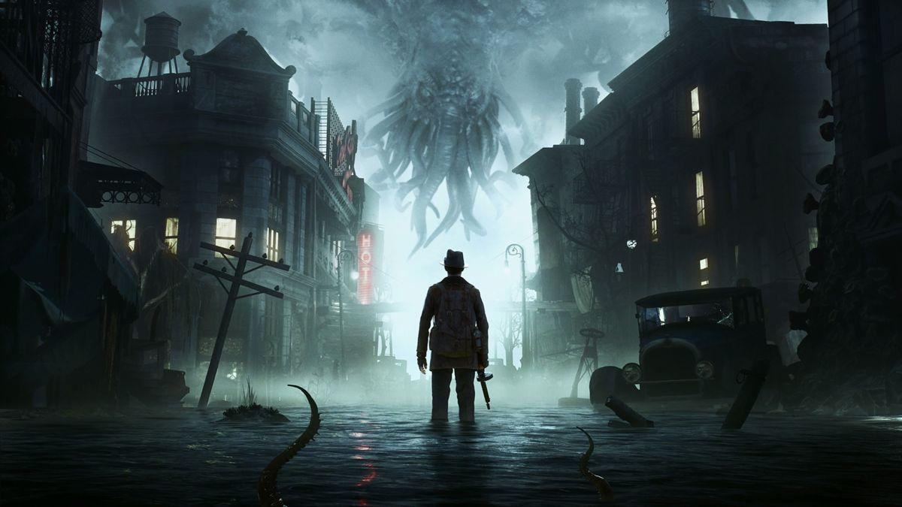
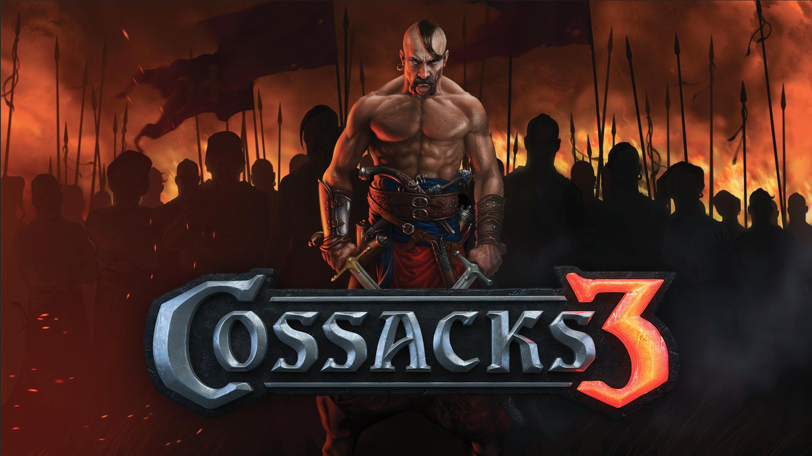
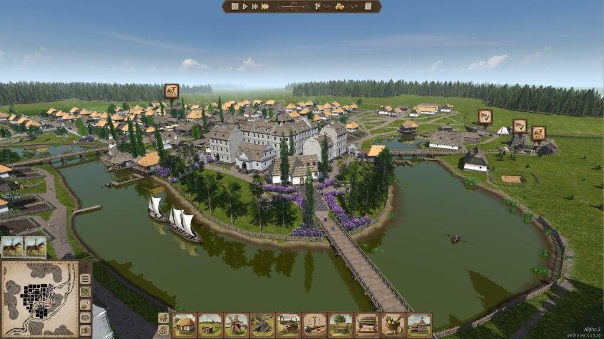
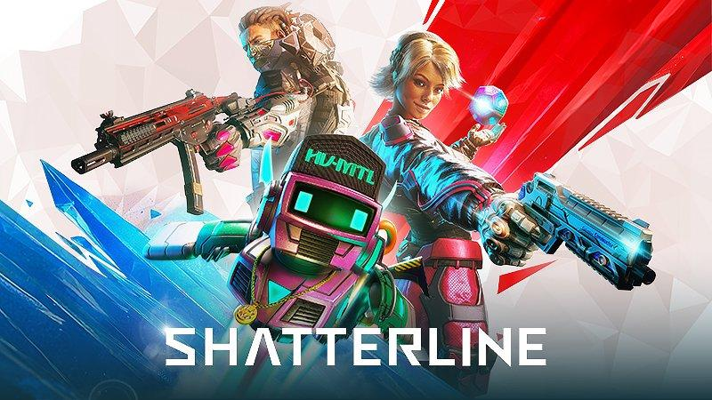

S.T.A.L.K.E.R. 2: Heart of Chornobyl
GSC Game World
An action game set in a dangerous and mysterious world. Explore the Chornobyl Exclusion Zone and fight for survival.

Discover the exciting world of Ukrainian game development.
Three iconic games from Ukrainian developers.

GSC Game World
An action game set in a dangerous and mysterious world. Explore the Chornobyl Exclusion Zone and fight for survival.

4A Games
A post-apocalyptic adventure combining survival, exploration, and intense action in a world devastated by nuclear war.

Frogwares
A detective adventure set in a mysterious, flooded city filled with dark secrets, supernatural events, and investigations.
Ukrainian developers create games across many different genres. Here are some more examples of their creativity and talent.

Frogwares
Detective / Adventure
GSC Game World
Real-Time Strategy
Yevheniy
City Building / Simulation
Frag Lab
First-Person ShooterSengi Games
Adventure / Alchemy
Weasel Token
Puzzle / Adventure